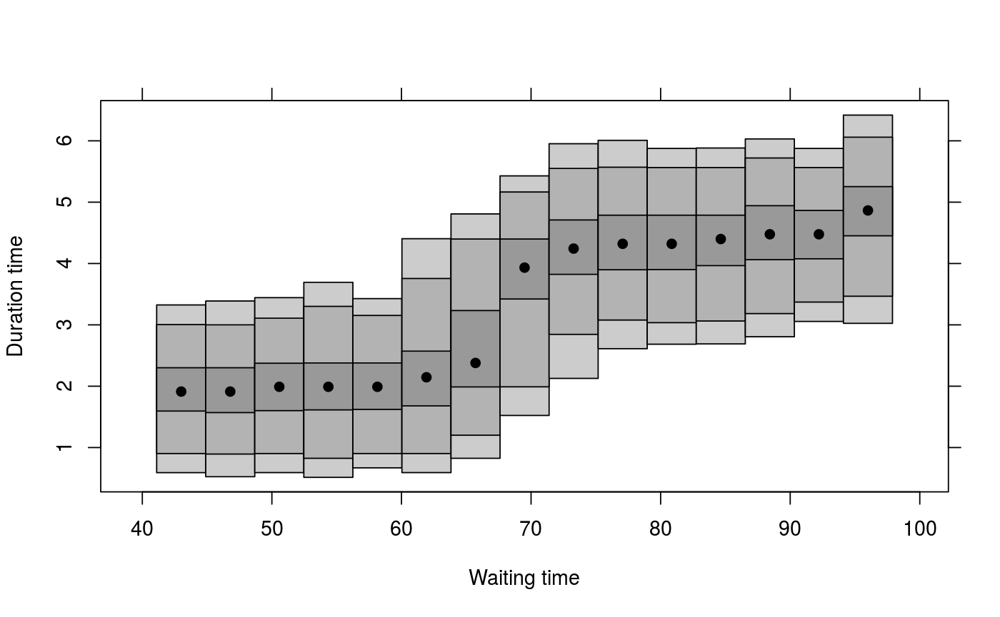

Calculates and plots highest density regions for a conditional density
estimate. Uses output from cde.
hdr.cde(den, prob = c(50, 95, 99), plot = TRUE, plot.modes = TRUE, mden = rep(1, length(den$x)), threshold = 0.05, nn = 1000, xlim, ylim, xlab, ylab, border = TRUE, font = 1, cex = 1, ...)
| den | Conditional density in the same format as the output from
|
|---|---|
| prob | Probability coverage level for HDRs |
| plot | Should HDRs be plotted? If FALSE, results are returned. |
| plot.modes | Should modes be plotted as well as HDRs? |
| mden | Marginal density in the |
| threshold | Threshold for margin density. HDRs are not plotted if the
margin density |
| nn | Number of points to be sampled from each density when estimating the HDRs. |
| xlim | Limits for x-axis. |
| ylim | Limits for y-axis. |
| xlab | Label for x-axis. |
| ylab | Label for y-axis. |
| border | Show border of polygons |
| font | Font to be used in plot. |
| cex | Size of characters. |
| … | Other arguments passed to plotting functions. |
array (a,b,c) where where a specifies conditioning value, b gives the HDR endpoints and c gives the probability coverage.
estimated mode of each conditional density
Hyndman, R.J., Bashtannyk, D.M. and Grunwald, G.K. (1996) "Estimating and visualizing conditional densities". Journal of Computational and Graphical Statistics, 5, 315-336.
faithful.cde <- cde(faithful$waiting,faithful$eruptions) plot(faithful.cde,xlab="Waiting time",ylab="Duration time",plot.fn="hdr")